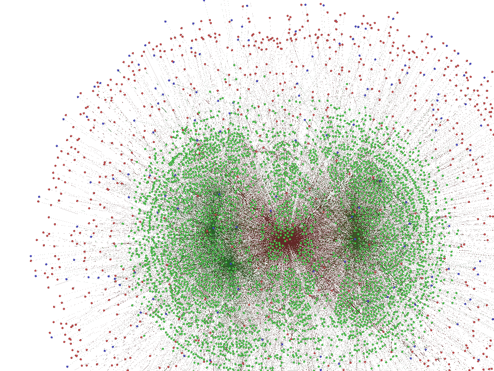
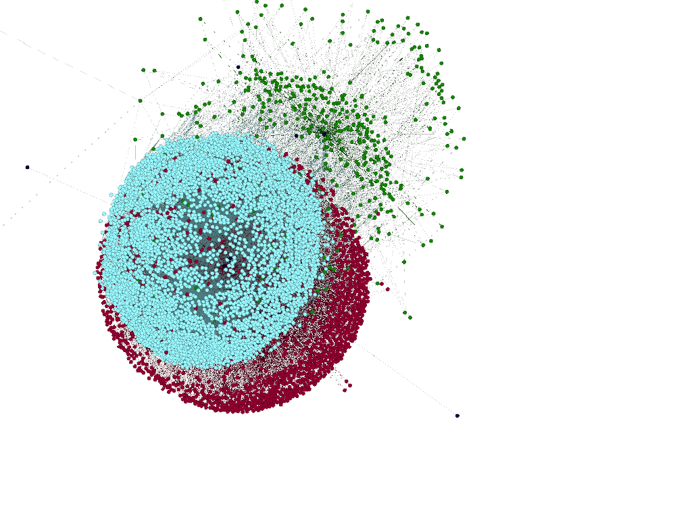
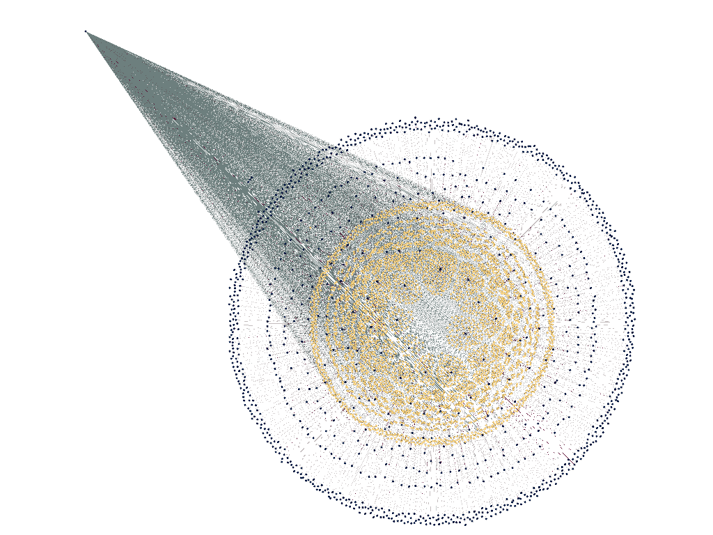
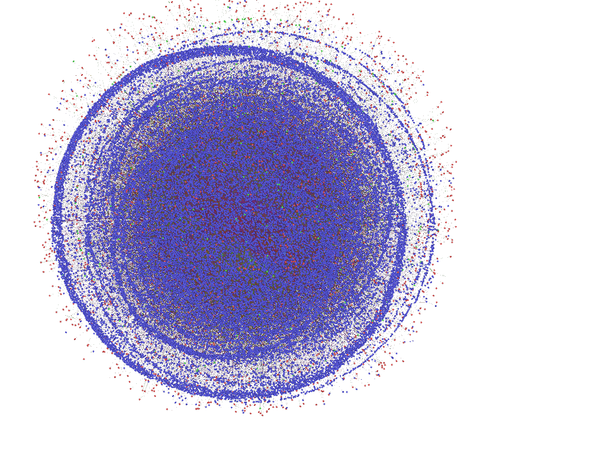
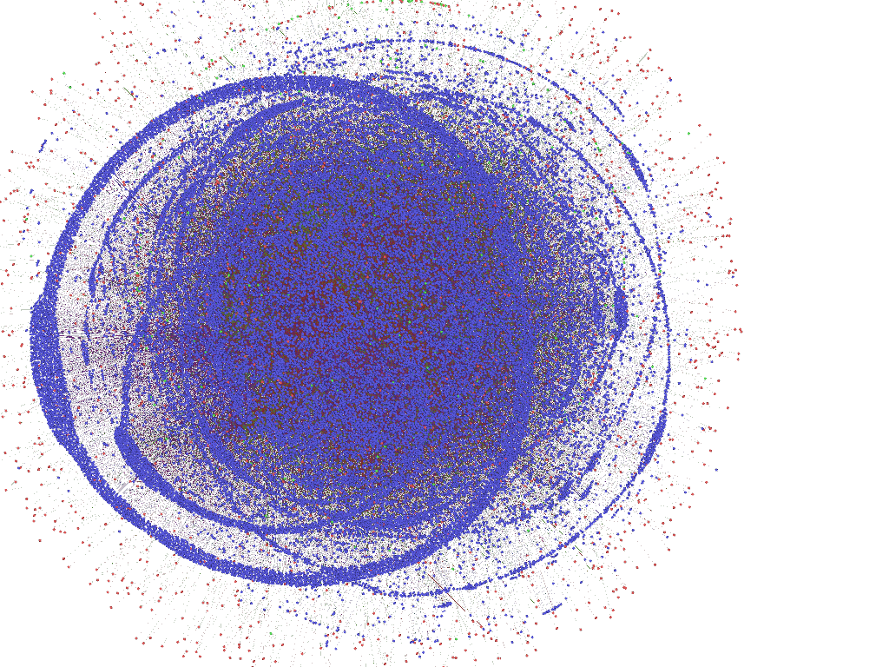
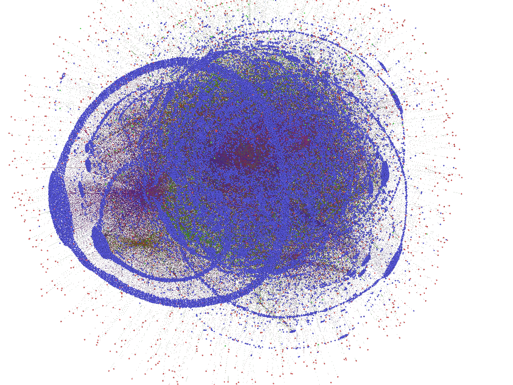
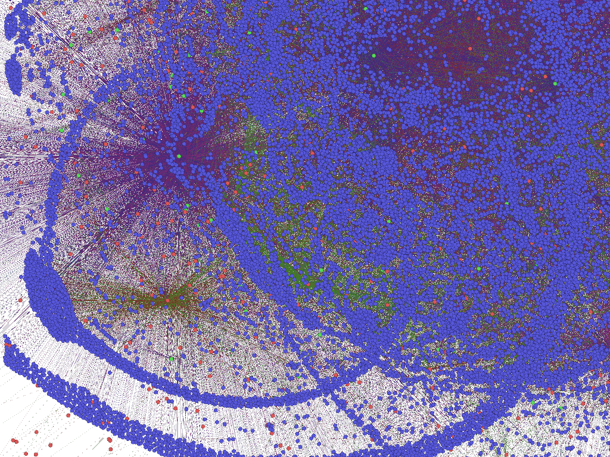

A few last easy visualizations, before I move on to different datasets and methodologies. First, as close to an informative visualization of Voltaire and his correspondents as I can produce:

And a few of the more interesting drafts of Benjamin Franklin’s network:
  


  



The network focused on the neighborhood of Voltaire, Ferney, London and Jeremy Bentham. The bulges on the sides of the circles are the beginning of the accumulation of letters that have only one associated location, which will later become the tails seen in the earlier Voltaire visualization.